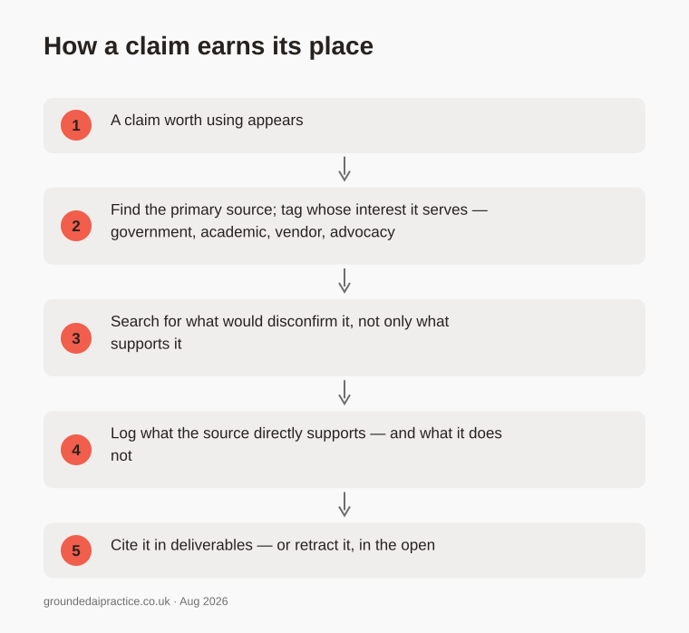
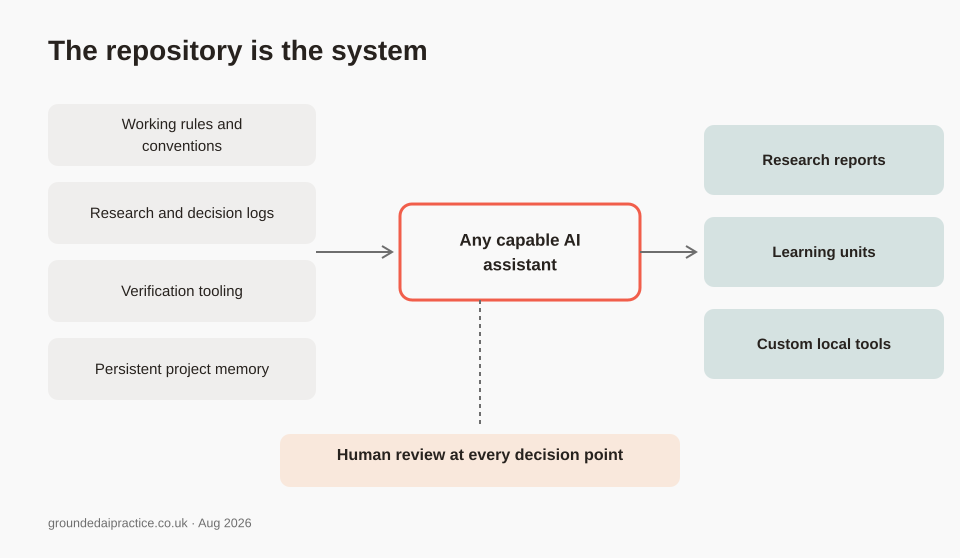

Practical AI capability through responsible, hands-on learning.
Grounded AI Practice is an independent research project on the UK's AI skills gap, and on what closing it would actually take.
Government documents put AI's value to the country in the hundreds of billions of pounds. Millions of workers have been promised training by 2030. Progress so far is reported in courses completed, not people trained, and the counting is done by the companies that sell the courses. The one number that would settle it, how many people have actually been trained, is not published.
This project does the groundwork in the open. Each claim is traced to its source, and corrections stay visible instead of being tidied away. The aim is teaching that reaches the people the official numbers say least about: ordinary workers and small organisations.
Counted in courses, promised in people
Two sets of figures, both published by the government, sit at the centre of the project's current research. A partnership of eleven technology companies reports just over a million course completions towards a target of seven and a half million workers trained. The government's own £100 million AI programme, BridgeAI, reports 1,700.

Both sets of numbers are published by the government. Neither appears next to the other.
What these figures do not show matters as much as what they do. No published number counts distinct people trained, defines what a completed course is, or breaks the total down by who delivered it. The research asks a narrow question — can anyone outside government check the claim? — not whether the ambition is wrong.
How the research works
Four rules, applied in public and visible throughout the logs.
Evidence and inference are never blurred
Every entry separates what a source directly supports from what the project inferred. Opinion is labelled as opinion.
Sources are tagged by interest
Government, independent, vendor, advocacy. It stays visible when the evidence base is concentrated in parties with a stake in the answer.
Disconfirming evidence is sought deliberately
Claims that would change the project's direction are tested against what would undermine them, not only what supports them.
Nothing is silently altered
Corrections and retractions are added as new entries that reference what they supersede, so the reasoning stays traceable.

These are not aspirations. The logs contain retractions, corrected findings and claims the project could not verify — all left visible, because a project arguing that the UK needs better-evidenced AI skills provision should be able to show its own evidence.
The practice is the product
The most distinctive thing this project has produced is not any single report. It is the working practice that produces them: a repository of rules, logs, verification tooling and memory, built so an AI assistant can read it and work from it directly — with a human reviewing every decision. The research on this page is what that system found. The system that found it is public, in the same repository.

The working direction, adopted August 2026, is to package that practice for small organisations and individuals: proper use of the AI tools they already have, getting the right context to a model in each case, and custom — sometimes fully local — tools where those cut cost, improve privacy or reduce dependence on a single provider. Large organisations already work this way. Most small ones cannot, and the gap shows in the adoption figures.

This is a direction, not a validated product. Whether small organisations want it, and what they would pay for, is an open research question — and the project's log records it as one.
What is being built now
A public report on the UK's AI skills programme
A short report for a general reader: what was promised, what is published, and whether anyone outside government can check it. Built on a fully source-tagged technical companion, drafted and revised in the open.
A pilot learning unit on effective prompting
One practical capability — what is really happening when you hit send — sized to 30–90 minutes and sequenced from worked example to independent practice. To be tested with a small group of real learners before anything is scaled.
The practice system itself
The rules, logs and verification tools this site describes, plus the local infrastructure they run on — including an always-on home server build, documented step by step as learning material.
What this is not: a finished curriculum, a product, or a set of conclusions presented as settled. Where the evidence is thin, the log says so.